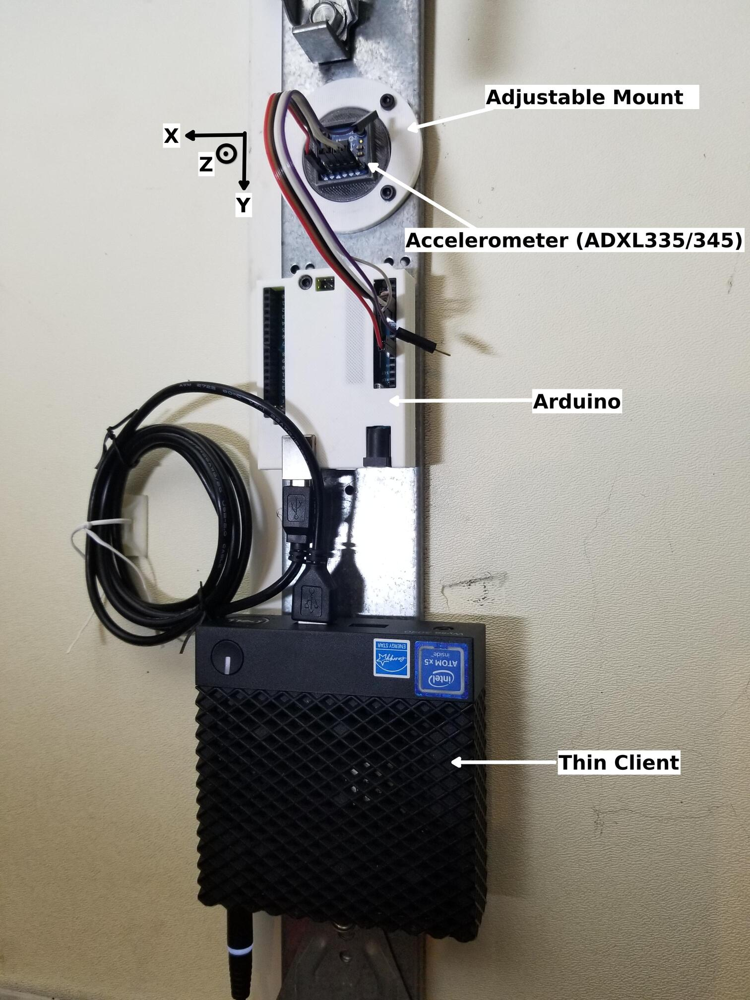
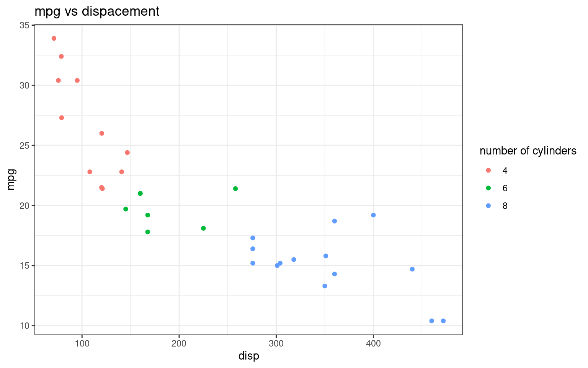

graph TB
A(Accelerometer)-->AA
subgraph Future-Replace
AA[Arduino]-->E[Thin Client]
style Future-Replace fill:#f0f0f0,stroke:grey,stroke-width:2px
end
E-->F[AWS RDS]
F-->FF[Decisions / Notifications]
F-->G("Dashboard </br>(Metrics, Sensor Data, Decisions)")
FF-.->G
GD(Garage Door) -.-> A
style G fill:#B6E6E6
style GD fill:salmon
style E stroke:blue,stroke-width:3px
subgraph Thin-Client
BB((Every </br> 2 Hours))-->CA[Gather Data]
BB-->CAA[Preprocess]
CAA-->CAAB{Door Activity?}
CAAB--Yes-->CBB[Run Models]
CAAB--No-->CAAC(End)
CBB-->CB[Data / Results]
style BB fill:salmon
style Thin-Client fill:#f0f0f0,stroke:blue,stroke-width:3px
end
Garage Door Prognostics and Health Management
Introduction
Work in Progress
Welcome to the documentation for the “Garage Door Prognostics” project.
System Configuration


Note on Code Folding
I will leave the code blocks open by default, but there will be instances where code folding would warrant. If this is the case, you could easily unfold them by clicking an arrow above the output.
Here is an example:
Code
mtcars |>
ggplot(aes(disp, mpg, col = factor(cyl))) +
geom_point() +
labs(title = "mpg vs dispacement",
col = "number of cylinders") 
Session Information
Everything on this documentation is reproducible. The code and data are here.
R: R version 4.3.1 (2023-06-16)
Rust: rustc 1.68.2 (9eb3afe9e 2023-03-27)
Python: Python 3.9.13
C++: gcc (Ubuntu 11.3.0-1ubuntu1~22.04.1) 11.3.0, Copyright (C) 2021 Free Software Foundation, Inc., This is free software; see the source for copying conditions. There is NO, warranty; not even for MERCHANTABILITY or FITNESS FOR A PARTICULAR PURPOSE.,